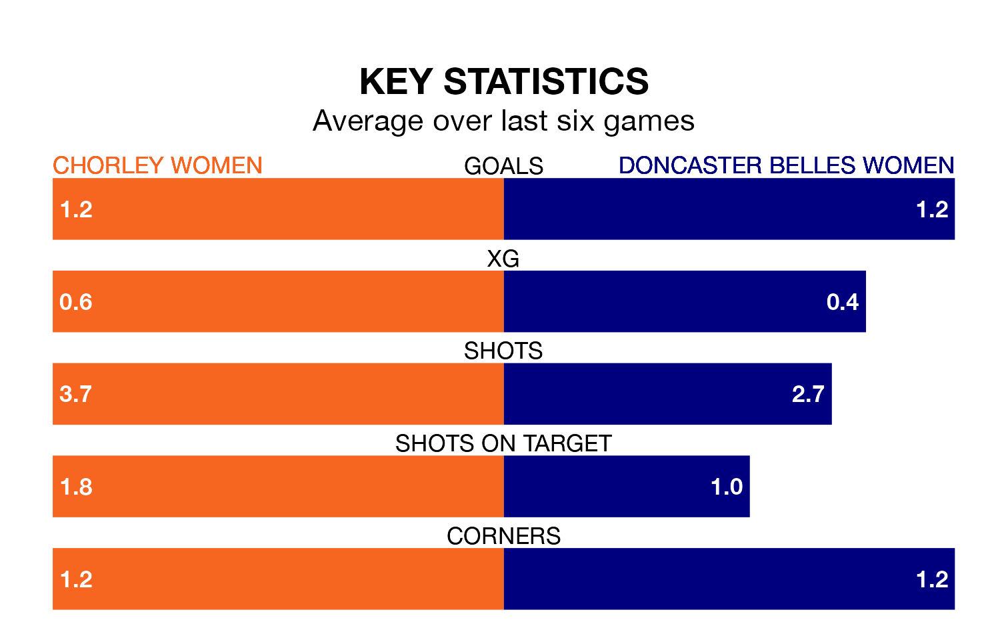

Chorley Women face Doncaster Belles Women on Sunday looking to secure a first win in six Women's National League Division One – North games.
Chorley have lost four and drawn one matches since they last earned three points – against Chester-le-Street Town FC Women on October 8.
They face a Doncaster Belles side who have won just one and drawn one over that time.
With 11 goals in 11 games so far this season, Chorley are the league's second-lowest scorers with 1.0 goals per game. And they are conceding more than average, letting in 22 goals at a rate of 2.0 per game.
Doncaster Belles, meanwhile, are above average scorers, with 1.8 goals per game, compared to a league average of 1.6. They have conceded 2.5 goals per game.
The visitors are ninth in the table after 11 games, of which they have won three and drawn two, earning 11 points.
The home team are one place ahead of Doncaster Belles in eighth, with three wins and three draws putting them on 12 points.
Chorley's last match was on January 21, a 2-0 loss against Durham Cestria WFC.
Doncaster Belles drew 2-2 with Stockport County Women last time out, on January 14.
Updated: 08:51 (UTC), 25/01/24